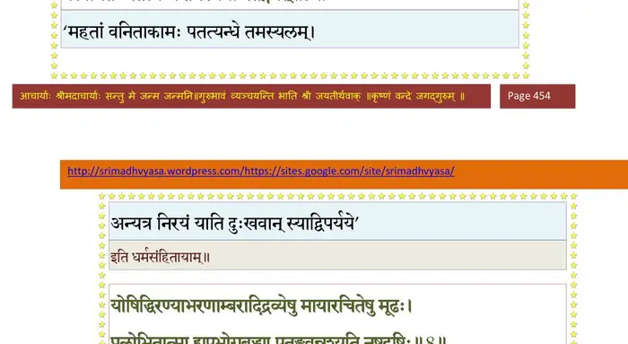
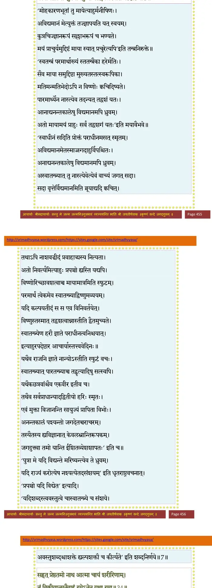
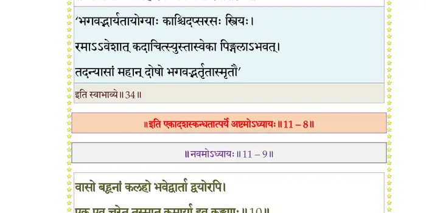

स्कन्ध 11 · अध्याय 8
श्लोक १
ब्राह्मण उवाच–
सुखमैन्द्रियकं राजन् स्वर्गे नरक एव च ।
देहिनां यद् यथा दुःखं तस्मान्नेच्छेत तद् बुधः।। १ ।।
सुखमैन्द्रियकं राजन् स्वर्गे नरक एव च ।
देहिनां यद् यथा दुःखं तस्मान्नेच्छेत तद् बुधः।। १ ।।
श्लोक २
ग्रासं विसृष्टं दिष्टेन महान्तं स्तोकमेव च ।
यदृच्छयैवापतितं ग्रसेदजगरोऽक्रियः ।। २ ।।
यदृच्छयैवापतितं ग्रसेदजगरोऽक्रियः ।। २ ।।
श्लोक ३
शयीताहानि भूरीणि निराहारोऽनुपक्रमः ।
यदि नोपनमेद् ग्रासो महाहिरिव दिष्टभुक्।। ३ ।।
यदि नोपनमेद् ग्रासो महाहिरिव दिष्टभुक्।। ३ ।।
श्लोक ४
ओजः सहोबलयुतं बिभ्रद् देहमकर्मकम् ।
शयानो वीतनिद्रश्च नेहेतेन्द्रियवानपि ।। ४ ।।
शयानो वीतनिद्रश्च नेहेतेन्द्रियवानपि ।। ४ ।।
श्लोक ५
मुनिः प्रसन्नगम्भीरो दुर्विगाह्यो दुरत्ययः ।
अनन्तपारो ह्यक्षोभ्यः स्तिमितोद इवार्णवः ।। ५ ।।
अनन्तपारो ह्यक्षोभ्यः स्तिमितोद इवार्णवः ।। ५ ।।
श्लोक ६
समृद्धकामो हीनो वा नारायणपरो मुनिः ।
नोत्सर्पेत न शुष्येत सरिद्भिरिव सागरः ।। ६ ।।
नोत्सर्पेत न शुष्येत सरिद्भिरिव सागरः ।। ६ ।।
श्लोक ७
दृष्ट्वा स्त्रियं देवमायां तद्भावैरजितेन्द्रियः ।
प्रलोभितः पतन्त्यन्धे तमस्यग्नौ पतङ्गवत् ।। ७ ।।
प्रलोभितः पतन्त्यन्धे तमस्यग्नौ पतङ्गवत् ।। ७ ।।
भागवततात्पर्यनिर्णय

श्लोक ८
योषित्सु तल्पाभरणाम्बरादिद्रव्येषु मायारचितेषु मूढः ।
प्रलोभितात्मा ह्युपभोगबुध्या पतङ्गवन्नश्यति नष्टदृष्टिः।। ८ ।।
प्रलोभितात्मा ह्युपभोगबुध्या पतङ्गवन्नश्यति नष्टदृष्टिः।। ८ ।।
भागवततात्पर्यनिर्णय

श्लोक ९
स्तोकं स्तोकं ग्रसेद् ग्रासं देहो वर्तेत यावता ।
गृहाद् व्रजेत् समातिष्ठन् वृत्तिं माधुकरीं मुनिः।। ९ ।।
गृहाद् व्रजेत् समातिष्ठन् वृत्तिं माधुकरीं मुनिः।। ९ ।।
श्लोक १०
अणुभ्यश्च महद्भ्यश्च शास्त्रेभ्यः कुशलो नरः ।
सर्वतः सारमादद्यात् पुष्पेभ्य इव षट्पदः।। १० ।।
सर्वतः सारमादद्यात् पुष्पेभ्य इव षट्पदः।। १० ।।
श्लोक ११
सायन्तनं श्वस्तनं वा न सङ्गृह्णीत भिक्षितम् ।
पाणिपात्रोदरामत्रो मक्षिकेव न सङ्ग्रही ।
मक्षिका इव सङ्गृह्णन् सह तेन विनश्यति।। ११ ।।
पाणिपात्रोदरामत्रो मक्षिकेव न सङ्ग्रही ।
मक्षिका इव सङ्गृह्णन् सह तेन विनश्यति।। ११ ।।
श्लोक १२
पदाऽपि युवतीं भिक्षुर्न स्पृशेद् दारवीमपि ।
स्पृशन् करीव बध्येत करिण्या अङ्गसङ्गतः ।। १२ ।।
स्पृशन् करीव बध्येत करिण्या अङ्गसङ्गतः ।। १२ ।।
श्लोक १३
नाधिगच्छेत् स्त्रियं प्राज्ञः कर्हिचिन्मृत्युमात्मनः ।
बलाधिकैः स हन्येत गजैरन्यैर्गजो यथा ।। १३ ।।
बलाधिकैः स हन्येत गजैरन्यैर्गजो यथा ।। १३ ।।
श्लोक १४
न देयं नोपभोग्यं च लुब्धैर्यद् दुःखसञ्चितम् ।
भुङ्क्ते स्वमपि तच्चान्यो मधुहेवार्थव(वि)न्मधु।। १४ ।।
भुङ्क्ते स्वमपि तच्चान्यो मधुहेवार्थव(वि)न्मधु।। १४ ।।
श्लोक १५
सुदुःखोपार्जितैर्वित्तैराशासानां गृहाशिषः ।
मधुहेवाग्रतो भुङ्क्ते यतिर्वै गृहमेधिनाम्।। १५ ।।
मधुहेवाग्रतो भुङ्क्ते यतिर्वै गृहमेधिनाम्।। १५ ।।
श्लोक १६
ग्राम्यगीतं न शृणुयाद् यतिर्वनचरः क्वचित् ।
शिक्षेऽहं हरिणाद् बद्धान्मृगयोर्गीतमोहितात्।। १६ ।।
शिक्षेऽहं हरिणाद् बद्धान्मृगयोर्गीतमोहितात्।। १६ ।।
श्लोक १७
नृत्यवादित्रगीतानि जुषन् ग्राम्याणि योषिताम् ।
आसां क्रीडनकान्धः स्याद् ऋष्यशृङ्गो मुनिर्यथा।। १७ ।।
आसां क्रीडनकान्धः स्याद् ऋष्यशृङ्गो मुनिर्यथा।। १७ ।।
श्लोक १८
जिह्वयाऽथ(ति) प्रमाथिन्या जनो रसविमोहितः ।
मृत्युमृच्छत्यतद्बुद्धिर्मीनस्तु बडिशैर्यथा।। १८ ।।
मृत्युमृच्छत्यतद्बुद्धिर्मीनस्तु बडिशैर्यथा।। १८ ।।
श्लोक १९
इन्द्रियाणि जयन्त्याशु निराहारा मनीषिणः ।
वर्जयित्वा तु रसनामसौ रस्ये हि वर्धते।। १९ ।।
वर्जयित्वा तु रसनामसौ रस्ये हि वर्धते।। १९ ।।
श्लोक २०
तावज्जितेन्द्रियो न स्याद् विजितान्येन्द्रियः पुमान् ।
न जयेद् रसनं यावज्जितं सर्वं जिते रसे।। २० ।।
न जयेद् रसनं यावज्जितं सर्वं जिते रसे।। २० ।।
श्लोक २१
पिङ्गला नाम वेश्याऽऽसीद् विदेहनगरे पुरा ।
तस्या मे शिक्षितं किञ्चिन्निबोध नृपसत्तम।। २१ ।।
तस्या मे शिक्षितं किञ्चिन्निबोध नृपसत्तम।। २१ ।।
श्लोक २२
सा स्वैरिण्येकदा कान्तं सङ्केत उपनेष्यती ।
अभूत् काले गृहद्वारि बिभ्रती रूपमुत्तमम्।। २२ ।।
अभूत् काले गृहद्वारि बिभ्रती रूपमुत्तमम्।। २२ ।।
श्लोक २३
मार्ग आगच्छतो वीक्ष्य पुरुषान् पुरुषर्षभ ।
तान् शुल्कदान् वित्तवतः कान्तान् मेनेऽर्थकामुका।। २३ ।।
तान् शुल्कदान् वित्तवतः कान्तान् मेनेऽर्थकामुका।। २३ ।।
श्लोक २४
आगतेष्वपयातेषु सा सङ्केतोपजीविनी ।
अथान्यो वित्तवान् कोऽपि मामुपेष्यति भूरिदः।। २४ ।।
अथान्यो वित्तवान् कोऽपि मामुपेष्यति भूरिदः।। २४ ।।
श्लोक २५
एवं दुराशयध्वस्तनिद्रा द्वार्यवलम्बिनी ।
निर्गच्छन्ती प्रविशती निशीथं प्रत्यपद्यत।। २५ ।।
निर्गच्छन्ती प्रविशती निशीथं प्रत्यपद्यत।। २५ ।।
श्लोक २६
तस्या वित्ताशया शुष्यद्वक्त्राया दीनचेतसः ।
निर्वेदः परमो जज्ञे चिन्ताहेतिः सुखावहः।। २६ ।।
निर्वेदः परमो जज्ञे चिन्ताहेतिः सुखावहः।। २६ ।।
श्लोक २७
तथा निर्विण्णचित्ताया गीतं शृणु यथा मम।। २७ ।।
श्लोक २८
निर्वेद आशापाशानां पुरुषस्य यथा ह्यसिः ।
नह्यङ्ग जातनिर्वेदो देहबन्धं जिहासति।। २८ ।।
नह्यङ्ग जातनिर्वेदो देहबन्धं जिहासति।। २८ ।।
श्लोक २९
पिङ्गलोवाच–
अहो मे मोहविततिं पश्यताविजितात्मनः ।
या कान्तादसतः (व्रजतः) कामं कामये येन बालिशा।। २९ ।।
अहो मे मोहविततिं पश्यताविजितात्मनः ।
या कान्तादसतः (व्रजतः) कामं कामये येन बालिशा।। २९ ।।
श्लोक ३०
सन्तं समीपे रमणं रतिप्रदं वित्तप्रदं नित्यमिमं विहाय ।
अकामदं दुःखभयादिशोकमोहप्रदं तुच्छमहं भजेऽज्ञा।। ३० ।।
अकामदं दुःखभयादिशोकमोहप्रदं तुच्छमहं भजेऽज्ञा।। ३० ।।
श्लोक ३१
अहो मयाऽऽत्मा परितापितो वृथा
साङ्केत्यवृत्त्याऽतिविगर्ह्यवार्तया ।
स्त्रैणान् नरांश्चार्थतृषाऽनुशोच्यान्
क्रीत्वा हि वित्तं रतिमात्मनेच्छती।। ३१ ।।
साङ्केत्यवृत्त्याऽतिविगर्ह्यवार्तया ।
स्त्रैणान् नरांश्चार्थतृषाऽनुशोच्यान्
क्रीत्वा हि वित्तं रतिमात्मनेच्छती।। ३१ ।।
श्लोक ३२
यदस्थिभिर्निर्मितवंशवंश्यस्थूणं त्वचारोमनखैः पिनद्धम् ।
क्षरन्नवद्वारमगारमेतद् विण्मूत्रपूर्णं मदुपैति काऽन्या।। ३२ ।।
क्षरन्नवद्वारमगारमेतद् विण्मूत्रपूर्णं मदुपैति काऽन्या।। ३२ ।।
श्लोक ३३
विदेहानां पुरे ह्यस्मिन् अहमेकैव मूढधीः ।
याऽन्यमिच्छन्त्यतः स्वस्मात्
अन्यस्मात् कान्त(काम)मच्युतात्।। ३३ ।।
याऽन्यमिच्छन्त्यतः स्वस्मात्
अन्यस्मात् कान्त(काम)मच्युतात्।। ३३ ।।
श्लोक ३४
सुहृत् प्रेष्ठतमो नाथ आत्मा चायं शरीरिणाम् ।
तं विक्रीयात्मनैवाहं रमेऽनेन यथा रमा।। ३४ ।।
तं विक्रीयात्मनैवाहं रमेऽनेन यथा रमा।। ३४ ।।
भागवततात्पर्यनिर्णय

श्लोक ३५
कियत् प्रियं ते व्यभजन् कामान् मे कामदा नराः ।
आद्यन्तवन्तो भार्याया देवा वा कालविद्रुताः।। ३५ ।।
आद्यन्तवन्तो भार्याया देवा वा कालविद्रुताः।। ३५ ।।
श्लोक ३६
नूनं मे भगवान् प्रीतो विष्णुः केनापि कर्मणा ।
निर्वेदोऽयं दुराशाया यन्मे जातः सुखावहः।। ३६ ।।
निर्वेदोऽयं दुराशाया यन्मे जातः सुखावहः।। ३६ ।।
श्लोक ३७
मैवं स्युर्मन्दभाग्यायाः क्लेशा निर्वेदहेतवः ।
येनानुबन्धं निर्हृत्य पुरुषः शममृच्छति।। ३७ ।।
येनानुबन्धं निर्हृत्य पुरुषः शममृच्छति।। ३७ ।।
श्लोक ३८
तेनोपकृतमादाय शिरसा ग्राम्यसङ्गताः ।
त्यक्त्वा दुराशाः शरणं व्रजामि तमधीश्वरम्।। ३८ ।।
त्यक्त्वा दुराशाः शरणं व्रजामि तमधीश्वरम्।। ३८ ।।
श्लोक ३९
सन्तुष्टा श्रद्दधत्येतं यथालाभेन जीवती ।
विहराम्यमुनैवाहमात्मना रमणेन वै।। ३९ ।।
विहराम्यमुनैवाहमात्मना रमणेन वै।। ३९ ।।
श्लोक ४१
संसारकूपे पतितं विषयैर्मुषितेक्षणम् ।
ग्रस्तं कालाहिनाऽऽत्मानं कोऽन्योऽस्मात् त्रातुमीश्वरः ।।
आत्मैव ह्यात्मनो गोप्ता निर्विद्येत यदाऽखिलम् ।
अप्रमत्त इदं पश्येद् ग्रस्तं कालाहिना जगत्।। ४१ ।।
ग्रस्तं कालाहिनाऽऽत्मानं कोऽन्योऽस्मात् त्रातुमीश्वरः ।।
आत्मैव ह्यात्मनो गोप्ता निर्विद्येत यदाऽखिलम् ।
अप्रमत्त इदं पश्येद् ग्रस्तं कालाहिना जगत्।। ४१ ।।
श्लोक ४२
ब्राह्मण उवाच–
एवं व्यवसितमतिर्दुराशाः कान्ततर्षजाः ।
छित्वोपशममास्थाय शय्यामुपविवेश सा।। ४२ ।।
एवं व्यवसितमतिर्दुराशाः कान्ततर्षजाः ।
छित्वोपशममास्थाय शय्यामुपविवेश सा।। ४२ ।।
श्लोक ४३
आशा हि परमं दुःखं नैराश्यं परमं सुखम् ।
यथा सञ्छिद्य कान्ताशां सुखं सुष्वाप पिङ्गला।। ४३ ।।
यथा सञ्छिद्य कान्ताशां सुखं सुष्वाप पिङ्गला।। ४३ ।।
।। इति श्रीमद्भागवते एकादशस्कन्धे अष्टमोऽध्यायः ।।